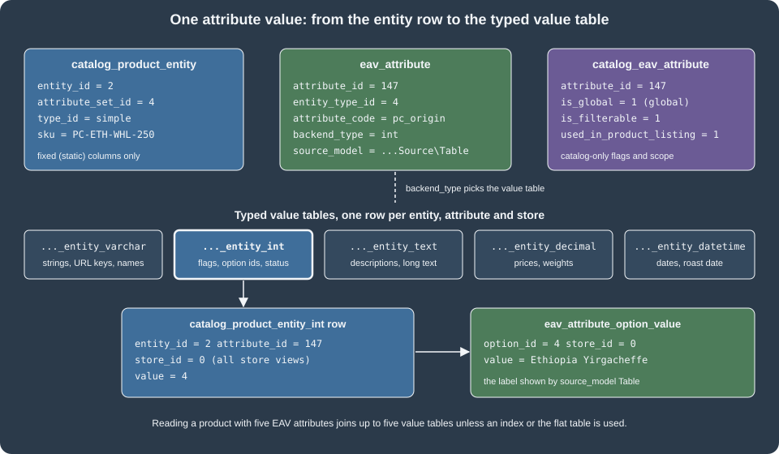

EAV and Attributes
|
This content was generated with the assistance of AI and should be verified against the official documentation before being relied on in production. |
This page was written against Magento Open Source and Adobe Commerce 2.4.9 (general availability 2026-05-12) and checked on 2026-10-27. Every example was run on Mage-OS 3.6.0, the Open Source distribution based on Magento 2.4.9, so the table names, class names and results quoted below come from a real installation (MariaDB 11.8, OpenSearch 3, PHP 8.5). The code applies to Magento Open Source and to Adobe Commerce on-premises and on cloud infrastructure, where a module can ship PHP. Adobe Commerce as a Cloud Service (ACCS) has a locked core and an out-of-process extensibility model, so a PHP data patch such as the ones below cannot be deployed there; attributes on that edition are created in the Admin or through the APIs, and the logic around them runs in App Builder (see Out-of-Process Extensibility).
Entity-Attribute-Value (EAV) is the storage model behind most of the catalog and customer data of Magento: products, categories, customers and customer addresses keep their descriptive fields as attribute definitions plus values in typed tables, instead of one fixed column per field. It is the reason why a merchant can add a "Roast date" field in the Admin without a schema change, and also the reason why reading a product is more expensive than reading a row. This page explains the model, builds the attributes that the Pocket Coffee shop needs (an origin drop-down, a roast level, a roast date, a favourite-grind customer attribute and a category "roast story") with data patches, reads them back through repositories, REST and GraphQL, and explains how extension attributes differ from custom attributes. It sits after Declarative Schema and Patches, whose data-patch mechanism it uses, and before Routing, Controllers, Blocks, Layouts and Templates, where the same attributes are displayed on the storefront.
The model in one picture

An EAV entity is stored in three layers:
-
The entity table holds the identity and the fixed columns, for example
catalog_product_entitywithentity_id,attribute_set_id,type_id,sku,created_atandupdated_at. -
The attribute metadata describes every field: its code, its type, its input widget, its models and, for catalog entities, its storefront behaviour. It lives in
eav_attributeplus one extension table per domain (catalog_eav_attribute,customer_eav_attribute). -
The value tables hold one row per entity, attribute and store view, in a table chosen by the attribute’s backend type:
catalog_product_entity_int,_varchar,_text,_decimal,_datetime(and_galleryfor the legacy gallery). Categories use the same suffixes incatalog_category_entity_*and customers incustomer_entity_*.
The value tables are keyed by entity_id, attribute_id and store_id; the unique key
CATALOG_PRODUCT_ENTITY_INT_ENTITY_ID_ATTRIBUTE_ID_STORE_ID on (entity_id, attribute_id, store_id) is what makes one
store view able to override the value of the default scope. In Magento Open Source the entity key column is
entity_id, as shown in the SHOW CREATE TABLE catalog_product_entity_int output of the test installation. Adobe
Commerce adds content staging, which uses a row_id key and sequence tables; that part of the model is Adobe
Commerce only and was not run for this page, so code that must work on both editions should go through the repositories
and the EntityManager rather than SQL.
The metadata tables
The metadata is plain data that you can read with SQL, which is the quickest way to understand an attribute that behaves strangely. These are the tables you will meet most often.
| Table | What it holds |
|---|---|
|
One row per EAV entity: |
|
One row per attribute and entity type: |
|
Catalog-only extension of |
|
Customer-domain extension: |
|
Which forms render a customer attribute ( |
|
The attribute sets of an entity type. The |
|
The groups (tabs or sections of the product form) inside an attribute set, with a stable |
|
The assignment of an attribute to a set and a group, with a |
|
The options of a drop-down or multiple-select attribute, and their labels per store. |
|
The storefront label of an attribute per store view. |
The entity types of the test installation, read from eav_entity_type, show which parts of the system are EAV:
| id | entity_type_code |
Main table | Default attribute set |
|---|---|---|---|
1 |
|
|
1 |
2 |
|
|
2 |
3 |
|
|
3 |
4 |
|
|
4 |
5-8 |
|
|
5-8 |
The sales entities are still registered as entity types for historical reasons, but their tables have flat columns; products, categories, customers and addresses are the entities in which you create attributes. The test installation had 26 customer, 19 customer address, 35 category and 69 product attributes after the Pocket Coffee attributes of this page were added.
Scope: global, website and store view
For catalog attributes, catalog_eav_attribute.is_global decides how many values an entity can have:
is_global |
Constant (ScopedAttributeInterface) |
Behaviour |
|---|---|---|
1 |
|
One value for the whole installation, always stored with |
2 |
|
One value per website, stored for every store view of that website. |
0 |
|
One value per store view, falling back to the default value in |
The numbers are not in the intuitive order and were confirmed on the test installation: the origin attribute (global)
has is_global = 1, the roast level (website) has 2 and the roast date (store view) has 0. Pick the narrowest scope
that matches the business rule, because every wider scope adds rows and a per-store fallback join. Origin does not
change per language, so it is global; a roast date can differ per website if each website sources its own batches, so a
real shop might choose website scope.
The Adobe documentation states that the scope of a customer custom attribute is global only, while the other entities support the global, website and store-view scopes.
The Pocket Coffee product attributes
The patch below creates three product attributes. A data patch runs once, records its class name in the patch_list
table, and is applied by bin/magento setup:upgrade. It implements DataPatchInterface for the forward step and
PatchRevertableInterface so that module:uninstall with data removal can undo it. The patch receives the
EavSetupFactory, not the EavSetup itself: injecting EavSetup directly is a documented cause of failing
setup:upgrade runs, because the object needs the module data setup passed to the factory.
<?php
declare(strict_types=1);
namespace PocketCoffee\Eav\Setup\Patch\Data;
use Magento\Catalog\Model\Product;
use Magento\Eav\Model\Entity\Attribute\ScopedAttributeInterface;
use Magento\Eav\Setup\EavSetup;
use Magento\Eav\Setup\EavSetupFactory;
use Magento\Framework\Setup\ModuleDataSetupInterface;
use Magento\Framework\Setup\Patch\DataPatchInterface;
use Magento\Framework\Setup\Patch\PatchRevertableInterface;
/**
* Adds the origin, roast level and roast date product attributes of Pocket Coffee.
*/
class AddProductAttributes implements DataPatchInterface, PatchRevertableInterface
{
public const ORIGIN = 'pc_origin';
public const ROAST_LEVEL = 'pc_roast_level';
public const ROAST_DATE = 'pc_roast_date';
public function __construct(
private readonly ModuleDataSetupInterface $moduleDataSetup,
private readonly EavSetupFactory $eavSetupFactory
) {
}
public function apply(): self
{
$this->moduleDataSetup->getConnection()->startSetup();
/** @var EavSetup $eavSetup */
$eavSetup = $this->eavSetupFactory->create(['setup' => $this->moduleDataSetup]);
// Drop-down with admin-managed options: stored as an int in catalog_product_entity_int.
$eavSetup->addAttribute(Product::ENTITY, self::ORIGIN, [
'type' => 'int',
'label' => 'Origin',
'input' => 'select',
'source' => \Magento\Eav\Model\Entity\Attribute\Source\Table::class,
'required' => false,
'global' => ScopedAttributeInterface::SCOPE_GLOBAL,
'user_defined' => true,
'visible' => true,
'visible_on_front' => true,
'used_in_product_listing' => true,
'searchable' => true,
'filterable' => 1,
'filterable_in_search' => true,
'comparable' => true,
'is_used_in_grid' => true,
'is_visible_in_grid' => true,
'is_filterable_in_grid' => true,
'group' => 'General',
'sort_order' => 60,
'option' => ['values' => ['Ethiopia Yirgacheffe', 'Colombia Huila', 'Brazil Cerrado']],
]);
// A second drop-down; per-website scope, not used in layered navigation.
$eavSetup->addAttribute(Product::ENTITY, self::ROAST_LEVEL, [
'type' => 'int',
'label' => 'Roast level',
'input' => 'select',
'source' => \Magento\Eav\Model\Entity\Attribute\Source\Table::class,
'required' => false,
'global' => ScopedAttributeInterface::SCOPE_WEBSITE,
'user_defined' => true,
'visible' => true,
'visible_on_front' => true,
'group' => 'General',
'sort_order' => 70,
'option' => ['values' => ['Light', 'Medium', 'Dark']],
]);
// A date: stored as a datetime in catalog_product_entity_datetime, editable per store view.
$eavSetup->addAttribute(Product::ENTITY, self::ROAST_DATE, [
'type' => 'datetime',
'label' => 'Roast date',
'input' => 'date',
'backend' => \Magento\Eav\Model\Entity\Attribute\Backend\Datetime::class,
'required' => false,
'global' => ScopedAttributeInterface::SCOPE_STORE,
'user_defined' => true,
'visible' => true,
'visible_on_front' => true,
'used_in_product_listing' => true,
'group' => 'General',
'sort_order' => 80,
]);
$this->moduleDataSetup->getConnection()->endSetup();
return $this;
}
public function revert(): void
{
$this->moduleDataSetup->getConnection()->startSetup();
/** @var EavSetup $eavSetup */
$eavSetup = $this->eavSetupFactory->create(['setup' => $this->moduleDataSetup]);
foreach ([self::ORIGIN, self::ROAST_LEVEL, self::ROAST_DATE] as $code) {
$eavSetup->removeAttribute(Product::ENTITY, $code);
}
$this->moduleDataSetup->getConnection()->endSetup();
}
public static function getDependencies(): array
{
return [];
}
public function getAliases(): array
{
return [];
}
}The module around it is the minimum from Module Anatomy: a
registration.php, a composer.json, and an etc/module.xml that declares a load-order sequence on Magento_Eav,
Magento_Catalog and Magento_Customer, so that the catalog and customer attributes and tables exist when the patches
run.
<?xml version="1.0"?>
<config xmlns:xsi="http://www.w3.org/2001/XMLSchema-instance" xsi:noNamespaceSchemaLocation="urn:magento:framework:Module/etc/module.xsd">
<module name="PocketCoffee_Eav">
<sequence>
<module name="Magento_Eav"/>
<module name="Magento_Catalog"/>
<module name="Magento_Customer"/>
</sequence>
</module>
</config>Running the module on the test installation:
bin/magento module:enable PocketCoffee_Eav
bin/magento setup:upgrade
bin/magento cache:flushsetup:upgrade finished with "Upgrade completed successfully." and the three product attributes appeared in
eav_attribute with the following rows (ids will differ on another installation):
attribute_id entity_type_id attribute_code backend_type frontend_input source_model
147 4 pc_origin int select Magento\Eav\Model\Entity\Attribute\Source\Table
148 4 pc_roast_level int select Magento\Eav\Model\Entity\Attribute\Source\Table
149 4 pc_roast_date datetime date NULLEvery key of addAttribute
EavSetup::addAttribute($entityType, $code, $options) accepts the keys below. The first column group is stored in
eav_attribute, the second in catalog_eav_attribute (only for catalog entities such as products and categories).
Defaults are those of the Adobe reference; an omitted key falls back to them, which is why an attribute created with
only type and label is a required, system, global varchar text field.
| Key | Meaning | Default |
|---|---|---|
|
|
|
|
|
none |
|
|
|
|
|
1 |
|
Marks the attribute as created by a merchant or extension. Required for it to be editable and deletable in the Admin. |
0 |
|
|
none |
|
|
0 |
|
A hint shown under the field. |
none |
|
|
none |
|
|
none |
|
|
none |
|
|
none |
|
Initial options, for example |
none |
|
Declares a system attribute that the Admin cannot delete. |
1 |
|
|
1 |
|
Attribute group name or id inside the set. |
none |
|
Name of the attribute set to assign to. Combines with |
all sets, when |
|
Position in the group ( |
none |
|
|
1 |
|
|
0 |
|
Search and layered navigation flags. |
0 |
|
Loaded with the products of category listings and search results; leave it at 0 for attributes that a list card does not show. |
0 |
|
Offered as a sort option. |
0 |
|
Whether the value is output without escaping on the storefront. |
0 |
|
Availability as a column and filter of the Admin product grid. |
0 |
|
Product types that can have the attribute. |
all types |
|
Layered navigation position, renderer class and the attribute model class. |
none |
Only the keys of the examples were exercised; the others follow the Adobe reference.
Source, backend and frontend models
The three model classes are the extension points of an attribute and are stored as class names in eav_attribute.
-
A source model turns an attribute into a list of options.
Source\Tableis the default for admin-managed drop-downs: the options live ineav_attribute_optionandeav_attribute_option_value, so the merchant can edit them in the Admin (Stores > Attributes > Product). A custom source model is the right choice when the list comes from code or from another system, as the customer grind attribute below shows. -
A backend model runs when the value is saved or loaded: it can validate, convert (an array to a comma-separated string, a date to the database format) or reject the value. The
Datetimebackend normalises the roast date. Multiple-select attributes use an array backend that stores the selected ids as a comma-separated string. -
A frontend model renders the value for the storefront. Most attributes need none.
Option ids are surrogate keys. The options of pc_origin were stored as option_id 4, 5 and 6 (ids 1 to 3 belong to
the options of the core gender attribute), which is why code must look an option up by its label through the attribute metadata and never
hard-code the id, as the command below does.
Attribute sets and groups
An attribute only appears on a product if it is assigned to the product’s attribute set and to a group of it. The
group key above placed the three attributes in the group named General of the Default set, which has the code
product-details and id 7 on the test installation. The assignment is the row in eav_entity_attribute:
entity_attribute_id entity_type_id attribute_set_id attribute_group_id attribute_id sort_order
146 4 4 7 147 60
147 4 4 7 148 70
148 4 4 7 149 80Products of other sets (for example a "Coffee Beans" set created by a merchant) do not show the attributes unless the set
is edited. In code, EavSetup offers addAttributeGroup(), addAttributeToSet() and addAttributeToGroup(); over
REST the same is done with three calls, all of which were run against the test installation with an admin token:
# 1. Create the set as a copy of the Default set (skeletonId 4); the response carries the new id (9 here)
curl -s -X POST localhost:8082/rest/V1/products/attribute-sets \
-H "Authorization: Bearer <admin-token>" -H "Content-Type: application/json" \
-d '{"attributeSet":{"attribute_set_name":"Coffee Beans","sort_order":10,"entity_type_id":4},"skeletonId":4}'
# 2. Add a group to the set; the response carries the group id (32 here)
curl -s -X POST localhost:8082/rest/V1/products/attribute-sets/groups \
-H "Authorization: Bearer <admin-token>" -H "Content-Type: application/json" \
-d '{"group":{"attribute_group_name":"Roast","attribute_set_id":9}}'
# 3. Assign an existing attribute to the set and group; the response is the entity-attribute id
curl -s -X POST localhost:8082/rest/V1/products/attribute-sets/attributes \
-H "Authorization: Bearer <admin-token>" -H "Content-Type: application/json" \
-d '{"attributeSetId":9,"attributeGroupId":32,"attributeCode":"pc_decaf","sortOrder":10}'An attribute group id of 0 is rejected with "The group with the ID doesn’t exist", which is the usual first mistake
when the group has not been created. The attribute used in step 3 had been created beforehand with
POST /rest/V1/products/attributes (a boolean pc_decaf); the set and the attribute were deleted afterwards with
DELETE /rest/V1/products/attribute-sets/9 and DELETE /rest/V1/products/attributes/pc_decaf.
Attribute code rules
The attribute code must be unique per entity type, start with a letter, use only letters, digits and underscores,
and be at most 60 characters in the 2.4.9-based sources (Attribute::ATTRIBUTE_CODE_MAX_LENGTH); the validator message says "letters (a-z or A-Z), numbers (0-9) or underscore (), and the first character should be a letter", and the prefix container is reserved by the system. Reserved codes are
rejected by ReservedAttributeList. Prefix custom codes with a vendor token (pc_ here) so that they cannot collide with
a future core attribute or another extension, and because the code becomes a property name in the REST payload, the
GraphQL filter input and the layered navigation URL parameter.
Reading and writing values with the data interfaces
Values are accessed through the data interfaces and repositories, never by SQL. The command below is a complete,
runnable example: it resolves the option id of the origin label from the attribute metadata, creates (or updates) the
product PC-ETH-WHL-250, reads the values back, searches by the attribute and prints the SQL that a collection would
run. It is registered as a console command in etc/di.xml.
<?xml version="1.0"?>
<config xmlns:xsi="http://www.w3.org/2001/XMLSchema-instance" xsi:noNamespaceSchemaLocation="urn:magento:framework:ObjectManager/etc/config.xsd">
<type name="Magento\Framework\Console\CommandListInterface">
<arguments>
<argument name="commands" xsi:type="array">
<item name="pocketcoffee_eav_demo" xsi:type="object">PocketCoffee\Eav\Console\Command\DemoCommand</item>
</argument>
</arguments>
</type>
<type name="Magento\Catalog\Api\ProductRepositoryInterface">
<plugin name="pocketcoffee_eav_days_since_roast" type="PocketCoffee\Eav\Plugin\AddDaysSinceRoast"/>
</type>
</config><?php
declare(strict_types=1);
namespace PocketCoffee\Eav\Console\Command;
use Magento\Catalog\Api\Data\ProductInterfaceFactory;
use Magento\Catalog\Api\ProductAttributeRepositoryInterface;
use Magento\Catalog\Api\ProductRepositoryInterface;
use Magento\Catalog\Model\ResourceModel\Product\CollectionFactory;
use Magento\Framework\Api\SearchCriteriaBuilder;
use Magento\Framework\App\Area;
use Magento\Framework\App\State;
use Magento\Framework\Exception\LocalizedException;
use Magento\Framework\Exception\NoSuchEntityException;
use PocketCoffee\Eav\Setup\Patch\Data\AddProductAttributes;
use Symfony\Component\Console\Command\Command;
use Symfony\Component\Console\Input\InputInterface;
use Symfony\Component\Console\Output\OutputInterface;
class DemoCommand extends Command
{
public function __construct(
private readonly State $appState,
private readonly ProductAttributeRepositoryInterface $attributeRepository,
private readonly ProductRepositoryInterface $productRepository,
private readonly ProductInterfaceFactory $productFactory,
private readonly SearchCriteriaBuilder $searchCriteriaBuilder,
private readonly CollectionFactory $collectionFactory,
?string $name = null
) {
parent::__construct($name);
}
protected function configure(): void
{
$this->setName('pocketcoffee:eav:demo')
->setDescription('Save a product with custom attributes and search by them');
}
protected function execute(InputInterface $input, OutputInterface $output): int
{
try {
$this->appState->setAreaCode(Area::AREA_ADMINHTML);
} catch (LocalizedException) {
// The area code is already set when the command runs inside a web request or a test.
}
// 1. Resolve the option id of the label "Ethiopia Yirgacheffe" from the attribute metadata.
$origin = $this->attributeRepository->get(AddProductAttributes::ORIGIN);
$originId = null;
foreach ($origin->getOptions() as $option) {
$output->writeln(sprintf('option %s => %s', $option->getValue() ?: '(empty)', $option->getLabel()));
if ($option->getLabel() === 'Ethiopia Yirgacheffe') {
$originId = $option->getValue();
}
}
// 2. Save a product with custom attribute values.
try {
$product = $this->productRepository->get('PC-ETH-WHL-250', true);
} catch (NoSuchEntityException) {
$product = $this->productFactory->create();
$product->setSku('PC-ETH-WHL-250')
->setName('Single-origin beans, Ethiopia, whole bean, 250 g')
->setTypeId('simple')
->setAttributeSetId($product->getDefaultAttributeSetId())
->setPrice(9.90)
->setWeight(0.25)
->setVisibility(4)
->setStatus(1)
->setWebsiteIds([1])
->setStockData(['qty' => 40, 'is_in_stock' => 1, 'manage_stock' => 1]);
}
$product->setCustomAttribute(AddProductAttributes::ORIGIN, $originId);
$product->setCustomAttribute(AddProductAttributes::ROAST_DATE, '2026-10-20');
$saved = $this->productRepository->save($product);
$output->writeln('saved id ' . $saved->getId());
// 3. Read the values back through the data interface.
$loaded = $this->productRepository->get('PC-ETH-WHL-250', false, null, true);
$output->writeln('origin option id: ' . $loaded->getCustomAttribute(AddProductAttributes::ORIGIN)->getValue());
$output->writeln('origin label: ' . $loaded->getAttributeText(AddProductAttributes::ORIGIN));
$output->writeln('roast date: ' . $loaded->getCustomAttribute(AddProductAttributes::ROAST_DATE)->getValue());
// 4. Search with an attribute filter (an EAV join under the hood).
$criteria = $this->searchCriteriaBuilder
->addFilter(AddProductAttributes::ORIGIN, $originId)
->create();
foreach ($this->productRepository->getList($criteria)->getItems() as $item) {
$output->writeln('found: ' . $item->getSku());
}
// 5. The same query through a collection; print the SQL to see the EAV joins.
$collection = $this->collectionFactory->create()
->addAttributeToSelect(['name', AddProductAttributes::ORIGIN, AddProductAttributes::ROAST_DATE])
->addAttributeToFilter(AddProductAttributes::ORIGIN, $originId);
$output->writeln((string) $collection->getSelect());
return Command::SUCCESS;
}
}The output on the test installation was:
$ bin/magento pocketcoffee:eav:demo
option (empty) =>
option 4 => Ethiopia Yirgacheffe
option 5 => Colombia Huila
option 6 => Brazil Cerrado
saved id 2
origin option id: 4
origin label: Ethiopia Yirgacheffe
roast date: 2026-10-20 00:00:00
found: PC-ETH-WHL-250
SELECT `e`.*, `at_pc_origin`.`value` AS `pc_origin` FROM `catalog_product_entity` AS `e`
INNER JOIN `catalog_product_entity_int` AS `at_pc_origin` ON (`at_pc_origin`.`entity_id` = `e`.`entity_id`) AND (`at_pc_origin`.`attribute_id` = '147') AND (`at_pc_origin`.`store_id` = 0) WHERE (at_pc_origin.value = '4')Points to read from this run:
-
setCustomAttribute()andgetCustomAttribute()are the interface-level accessors; custom attributes appear as a list ofcodeandvaluepairs in REST. Aselectattribute carries the option id ("4"), not the label.getAttributeText()on the model resolves the label through the source model. -
The date came back as
2026-10-20 00:00:00: thedatetimebackend type stores a full timestamp even for a date input. -
The two rows in the database are exactly the value rows of the picture above:
catalog_product_entity_intheld(entity_id 2, attribute_id 147, store_id 0, value 4)andcatalog_product_entity_datetimeheld(entity_id 2, attribute_id 149, store_id 0, value 2026-10-20 00:00:00). -
The collection joins one value table per attribute that is selected or filtered. A product listing that selects 20 attributes performs up to 20 such joins, which is why the system relies on indexes and
used_in_product_listing(see the performance section). The last query shows the join withstore_id = 0; a store-view-scoped attribute adds a second join for the current store and the store row overrides the default row when it exists. -
The command did not need an
ObjectManager: everything is constructor-injected. TheState::setAreaCode()call is mandatory in a console command that saves catalog entities, because the save plugins and observers depend on an area. -
A constructor change in a class that already has a generated interceptor (the first run of this command had five arguments, the second added the collection factory) failed with "Argument #6 must be of type … null given" until the stale file under
generated/code/PocketCoffee/was removed. In developer mode, delete the generated code of your module after changing a constructor, and runsetup:di:compilebefore deploying to production mode.
Customer attributes
Customer attributes are created with CustomerSetup, which wraps EavSetup and also knows the customer-specific
tables. Two things differ from products. First, the attribute must be marked system => false for
getCustomAttributes() to include it, otherwise the REST and GraphQL representation of the customer omits it (the
Adobe documentation states this for programmatically created customer attributes). Second, a customer attribute needs
to be attached to an attribute set, a group and one or more forms with used_in_forms, because the customer forms are
built from customer_form_attribute. Without it the attribute exists but is never rendered or saved by the account
pages and the Admin customer form.
The option list of the favourite grind is fixed, so it is a code-based source model instead of rows in
eav_attribute_option:
<?php
declare(strict_types=1);
namespace PocketCoffee\Eav\Model\Customer\Attribute\Source;
use Magento\Eav\Model\Entity\Attribute\Source\AbstractSource;
/**
* Fixed option list for the favourite grind: the values are code constants, not rows in eav_attribute_option.
*/
class Grind extends AbstractSource
{
public const WHOLE = 'whole';
public const ESPRESSO = 'espresso';
public const FILTER = 'filter';
public function getAllOptions(): array
{
if ($this->_options === null) {
$this->_options = [
['value' => '', 'label' => __('-- Please Select --')],
['value' => self::WHOLE, 'label' => __('Whole bean')],
['value' => self::ESPRESSO, 'label' => __('Espresso')],
['value' => self::FILTER, 'label' => __('Filter')],
];
}
return $this->_options;
}
}<?php
declare(strict_types=1);
namespace PocketCoffee\Eav\Setup\Patch\Data;
use Magento\Customer\Api\CustomerMetadataInterface;
use Magento\Customer\Model\Customer;
use Magento\Customer\Setup\CustomerSetup;
use Magento\Customer\Setup\CustomerSetupFactory;
use Magento\Eav\Model\Entity\Attribute\SetFactory as AttributeSetFactory;
use Magento\Framework\Setup\ModuleDataSetupInterface;
use Magento\Framework\Setup\Patch\DataPatchInterface;
use Magento\Framework\Setup\Patch\PatchRevertableInterface;
use PocketCoffee\Eav\Model\Customer\Attribute\Source\Grind;
/**
* Adds the favourite grind customer attribute and shows it in the admin and storefront account forms.
*/
class AddCustomerAttribute implements DataPatchInterface, PatchRevertableInterface
{
public const FAVOURITE_GRIND = 'pc_favourite_grind';
public function __construct(
private readonly ModuleDataSetupInterface $moduleDataSetup,
private readonly CustomerSetupFactory $customerSetupFactory,
private readonly AttributeSetFactory $attributeSetFactory
) {
}
public function apply(): self
{
$this->moduleDataSetup->getConnection()->startSetup();
/** @var CustomerSetup $customerSetup */
$customerSetup = $this->customerSetupFactory->create(['setup' => $this->moduleDataSetup]);
$customerEntity = $customerSetup->getEavConfig()->getEntityType(Customer::ENTITY);
$attributeSetId = $customerEntity->getDefaultAttributeSetId();
$attributeSet = $this->attributeSetFactory->create();
$attributeGroupId = $attributeSet->getDefaultGroupId($attributeSetId);
$customerSetup->addAttribute(CustomerMetadataInterface::ENTITY_TYPE_CUSTOMER, self::FAVOURITE_GRIND, [
'type' => 'varchar',
'label' => 'Favourite grind',
'input' => 'select',
'source' => Grind::class,
'required' => false,
'visible' => true,
'user_defined' => true,
'system' => false,
'position' => 200,
'sort_order' => 200,
]);
// Customer attributes are attached to an attribute set, a group and the forms that render them.
$attribute = $customerSetup->getEavConfig()
->getAttribute(CustomerMetadataInterface::ENTITY_TYPE_CUSTOMER, self::FAVOURITE_GRIND)
->addData([
'attribute_set_id' => $attributeSetId,
'attribute_group_id' => $attributeGroupId,
'used_in_forms' => ['adminhtml_customer', 'customer_account_create', 'customer_account_edit'],
]);
$attribute->save();
$this->moduleDataSetup->getConnection()->endSetup();
return $this;
}
public function revert(): void
{
$this->moduleDataSetup->getConnection()->startSetup();
/** @var CustomerSetup $customerSetup */
$customerSetup = $this->customerSetupFactory->create(['setup' => $this->moduleDataSetup]);
$customerSetup->removeAttribute(CustomerMetadataInterface::ENTITY_TYPE_CUSTOMER, self::FAVOURITE_GRIND);
$this->moduleDataSetup->getConnection()->endSetup();
}
public static function getDependencies(): array
{
return [];
}
public function getAliases(): array
{
return [];
}
}The patch created these rows, which together explain how a customer attribute reaches the forms:
eav_attribute 146 entity_type_id 1 pc_favourite_grind varchar select source_model ...Grind
eav_entity_attribute 145 attribute_set 1, group 1, attribute 146, sort_order 200
customer_eav_attribute 146 is_visible 1, is_system 0, sort_order 200
customer_form_attribute adminhtml_customer, customer_account_create, customer_account_edit -> 146Two details of this patch are worth keeping. The save() on the attribute model is the pattern the Adobe sample shows;
the Adobe page also notes that save() and getResource() on AbstractModel are deprecated since 2.1, yet for EAV
attribute models it remains the way to write used_in_forms, because the attribute resource model handles that field.
And used_in_forms is the list of form codes; remove a code to stop a form from rendering the attribute without deleting
its data.
Over REST the attribute is part of custom_attributes. A customer was created with it through
POST /rest/V1/customers and the value landed in customer_entity_varchar:
curl -s -X POST localhost:8082/rest/V1/customers \
-H "Authorization: Bearer <admin-token>" -H "Content-Type: application/json" \
-d '{"customer":{"email":"ada@example.test","firstname":"Ada","lastname":"Lovelace","website_id":1,"group_id":1,
"custom_attributes":[{"attribute_code":"pc_favourite_grind","value":"espresso"}]},
"password":"<a-test-password>"}'The response echoed custom_attributes with pc_favourite_grind = espresso, the metadata endpoint
GET /rest/V1/attributeMetadata/customer/attribute/pc_favourite_grind returned the three options plus the empty
choice, and the database row was customer_entity_varchar (attribute_id 146, entity_id 1, value espresso). The test
customer was deleted afterwards.
Customer addresses follow the same pattern with the entity type customer_address (AddressMetadataInterface::ENTITY_TYPE_ADDRESS)
and the form codes adminhtml_customer_address, customer_address_edit and customer_register_address; that variant
was not run for this page. Customer group membership (the "Coffee Club" group of the shop) is not an EAV attribute:
customer_entity.group_id references the customer_group table, so use the group, not an attribute, for pricing and tax
rules.
Category attributes
Category attributes are created the same way with the entity type Magento\Catalog\Model\Category::ENTITY. The value
table suffix is again chosen by the type, here text:
<?php
declare(strict_types=1);
namespace PocketCoffee\Eav\Setup\Patch\Data;
use Magento\Catalog\Model\Category;
use Magento\Eav\Model\Entity\Attribute\ScopedAttributeInterface;
use Magento\Eav\Setup\EavSetup;
use Magento\Eav\Setup\EavSetupFactory;
use Magento\Framework\Setup\ModuleDataSetupInterface;
use Magento\Framework\Setup\Patch\DataPatchInterface;
use Magento\Framework\Setup\Patch\PatchRevertableInterface;
/**
* Adds a "roast story" text attribute to categories.
*/
class AddCategoryAttribute implements DataPatchInterface, PatchRevertableInterface
{
public const ROAST_STORY = 'pc_roast_story';
public function __construct(
private readonly ModuleDataSetupInterface $moduleDataSetup,
private readonly EavSetupFactory $eavSetupFactory
) {
}
public function apply(): self
{
$this->moduleDataSetup->getConnection()->startSetup();
/** @var EavSetup $eavSetup */
$eavSetup = $this->eavSetupFactory->create(['setup' => $this->moduleDataSetup]);
$eavSetup->addAttribute(Category::ENTITY, self::ROAST_STORY, [
'type' => 'text',
'label' => 'Roast story',
'input' => 'textarea',
'required' => false,
'sort_order' => 90,
'global' => ScopedAttributeInterface::SCOPE_STORE,
'wysiwyg_enabled' => true,
'is_html_allowed_on_front' => true,
'group' => 'General Information',
]);
$this->moduleDataSetup->getConnection()->endSetup();
return $this;
}
public function revert(): void
{
$this->moduleDataSetup->getConnection()->startSetup();
/** @var EavSetup $eavSetup */
$eavSetup = $this->eavSetupFactory->create(['setup' => $this->moduleDataSetup]);
$eavSetup->removeAttribute(Category::ENTITY, self::ROAST_STORY);
$this->moduleDataSetup->getConnection()->endSetup();
}
public static function getDependencies(): array
{
return [];
}
public function getAliases(): array
{
return [];
}
}Unlike products, a category attribute is not shown in the Admin by the data patch alone. The category form is a UI
component, so the field must be added to the merged category_form.xml of the adminhtml area. The file below
validated against ui_configuration.xsd on the test installation; rendering it in the browser form was not executed.
<?xml version="1.0"?>
<form xmlns:xsi="http://www.w3.org/2001/XMLSchema-instance" xsi:noNamespaceSchemaLocation="urn:magento:module:Magento_Ui:etc/ui_configuration.xsd">
<fieldset name="content">
<field name="pc_roast_story" sortOrder="90" formElement="textarea">
<argument name="data" xsi:type="array">
<item name="config" xsi:type="array">
<item name="source" xsi:type="string">category</item>
</item>
</argument>
<settings>
<dataType>text</dataType>
<label translate="true">Roast story</label>
<dataScope>pc_roast_story</dataScope>
</settings>
</field>
</fieldset>
</form>A write through the category REST API stored the value in catalog_category_entity_text. The scope matters here: a
call to /rest/V1/categories/2 is executed in the default store view, so the value went to store_id = 1; the same
body sent to /rest/all/V1/categories/2 wrote store_id = 0, the default scope shared by every store view:
value_id attribute_id store_id entity_id value
2 145 1 2 Roasted every Tuesday in small batches.
3 145 0 2 Roasted every Tuesday in small batches (all scopes).The same rule applies to products: an integration that wants a global value must call the all store code, otherwise it
creates a store-view override that later changes at the default scope do not reach.
Reading attributes through the APIs
REST
A product returns its EAV values in custom_attributes, and the attribute definition is available at
GET /rest/V1/products/attributes/:code (the response includes every flag of catalog_eav_attribute, the options
list with labels and ids, the scope and the source model). For the origin attribute the response contained
"scope": "global", "is_filterable": true, "backend_type": "int" and the three options. Customer metadata is at
/V1/attributeMetadata/customer/attribute/:code, and the generic GET /V1/products/attributes?searchCriteria[...]
returns the list. Creating an attribute with POST /V1/products/attributes and assigning it with the three
attribute-set calls above was exercised on the test installation.
{
"sku": "PC-ETH-WHL-250",
"attribute_set_id": 4,
"custom_attributes": [
{"attribute_code": "pc_origin", "value": "4"},
{"attribute_code": "pc_roast_date", "value": "2026-10-20 00:00:00"}
]
}The payload above is a trimmed copy of the real response of GET /rest/V1/products/PC-ETH-WHL-250.
GraphQL
GraphQL exposes an attribute in three different ways, and each one needs its own flag:
| Use | Attribute flag that makes it work |
|---|---|
|
|
|
|
|
|
|
|
After a reindex, the origin filter and the metadata query returned the expected data on the test installation:
{
products(filter: {pc_origin: {eq: "4"}}) {
total_count
items { sku name }
aggregations { attribute_code label options { label value count } }
}
customAttributeMetadataV2(attributes: [{attribute_code: "pc_origin", entity_type: "catalog_product"}]) {
items { code label entity_type frontend_input is_required options { label value } }
errors { type message }
}
}The response had total_count 1, an aggregations entry for pc_origin with the option "Ethiopia Yirgacheffe" and
count 1, and the three options in the metadata. Two negative results from the same run document the flags: sorting by
pc_origin failed with Field "pc_origin" is not defined by type "ProductAttributeSortInput" because
used_for_sort_by is 0, and filtering by pc_roast_level failed with Field "pc_roast_level" is not defined by type "ProductAttributeFilterInput" because that attribute is neither filterable nor searchable. Reading values without a
filter uses custom_attributesV2:
{
products(filter: {sku: {eq: "PC-ETH-WHL-250"}}) {
items {
sku
custom_attributesV2(filters: {is_visible_on_front: true}) {
items {
code
... on AttributeValue { value }
... on AttributeSelectedOptions { selected_options { label value } }
}
}
}
}
}The select attribute came back as selected_options with the label "Ethiopia Yirgacheffe" and the date as the value
2026-10-20 00:00:00. The facets and the search results come from OpenSearch, so a new attribute is only filterable
after the product is reindexed; here bin/magento indexer:reindex catalogsearch_fulltext catalog_product_attribute did
that. The other indexers follow the settings of Caching,
Indexing and Performance.
Custom attributes and extension attributes
The two kinds of attribute are different in storage and in purpose.
| Custom (EAV) attribute | Extension attribute | |
|---|---|---|
Defined by |
A row in |
|
Stored in |
The typed EAV value tables |
Anywhere you decide: your own table, a join, or computed |
Visible in the Admin |
Yes, in the attribute set form |
No |
Data types |
Scalars and option ids |
Scalars, interfaces and arrays of interfaces |
In the API |
Under |
Under |
Typical use |
Product descriptors and customer profile fields |
Attaching extra structured data to an API object without changing its interface |
Third-party code cannot add methods to a core data interface, but most of them carry getExtensionAttributes() and
setExtensionAttributes(). Declare the attribute in XML, then populate it with a plugin on the repository, because the
framework only generates the container class and does not know where the value comes from. The generated
ProductExtensionInterface gains getDaysSinceRoast() and setDaysSinceRoast() from the declaration:
<?xml version="1.0"?>
<config xmlns:xsi="http://www.w3.org/2001/XMLSchema-instance" xsi:noNamespaceSchemaLocation="urn:magento:framework:Api/etc/extension_attributes.xsd">
<extension_attributes for="Magento\Catalog\Api\Data\ProductInterface">
<attribute code="days_since_roast" type="int"/>
</extension_attributes>
</config><?php
declare(strict_types=1);
namespace PocketCoffee\Eav\Plugin;
use Magento\Catalog\Api\Data\ProductInterface;
use Magento\Catalog\Api\Data\ProductSearchResultsInterface;
use Magento\Catalog\Api\ProductRepositoryInterface;
use PocketCoffee\Eav\Setup\Patch\Data\AddProductAttributes;
/**
* Fills the days_since_roast extension attribute on products returned by the repository.
*/
class AddDaysSinceRoast
{
public function afterGet(ProductRepositoryInterface $subject, ProductInterface $product): ProductInterface
{
return $this->addDays($product);
}
public function afterGetList(
ProductRepositoryInterface $subject,
ProductSearchResultsInterface $searchResults
): ProductSearchResultsInterface {
foreach ($searchResults->getItems() as $product) {
$this->addDays($product);
}
return $searchResults;
}
private function addDays(ProductInterface $product): ProductInterface
{
$attribute = $product->getCustomAttribute(AddProductAttributes::ROAST_DATE);
if ($attribute === null || !$attribute->getValue()) {
return $product;
}
$roasted = new \DateTimeImmutable((string) $attribute->getValue());
$days = (int) $roasted->diff(new \DateTimeImmutable('today'))->format('%r%a');
$extension = $product->getExtensionAttributes();
$extension->setDaysSinceRoast($days);
$product->setExtensionAttributes($extension);
return $product;
}
}The plugin is wired in the di.xml shown earlier (a plugin on the interface applies to its preference, the product
repository). GET /rest/V1/products/PC-ETH-WHL-250 on the test installation returned
"extension_attributes": {"days_since_roast": 7} for a roast date of 2026-10-20 checked on 2026-10-27.
The plugin reads the existing extension attributes and writes back the same container, the pattern that avoids clobbering
the extension attributes of other modules. See Plugins, Events
and Observers for the interception rules and
Service Contracts and Repositories for the
data-interface background.
Three behaviours of extension attributes to remember:
-
The
<join>child of an<attribute>makes a value filterable inSearchCriteria, by joining a reference table; with a join on the same table as the main entity the REST query becomes ambiguous and the filter field must be written asmain_table.<column>. -
A
<resources><resource ref="Vendor_Module::resource"/></resources>child restricts the attribute to API callers whose role holds the given ACL resource. There is no equivalent forcustom_attributes, which cannot be permission-restricted. -
ProductExtensionInterfaceis generated code. It is empty in a vanilla installation and acquires methods from the merged declarations of all modules, so the class is regenerated when the XML changes (cleargenerated/codein developer mode).
Caching and performance
-
Metadata caching.
Magento\Eav\Model\Configloads attribute metadata lazily and keeps it in theeavcache type. Since 2.3.4 the system EAV attributes are preloaded, and each module declares them in itsdi.xmlas theattributesForPreloadargument ofMagento\Eav\Model\Config; a heavily used custom attribute can be added the same way. After a patch that creates or changes an attribute, runbin/magento cache:flush, otherwise the old metadata keeps being served. -
Indexes carry the load on the storefront. The
catalog_product_attributeindexer (shown as "Product EAV" in the CLI) copies filterable attribute values intocatalog_product_index_eav. On the test installation it held(entity_id 2, attribute_id 147, store_id 1, value 4)for the origin of the product, which is the row that layered navigation joins. The search-driven pages use the OpenSearch index built bycatalogsearch_fulltext. -
Select only what you need.
addAttributeToSelect('*')is the most common cause of slow custom listings: it joins every value table that has data. List the attributes, and setused_in_product_listingonly on the attributes that a category card really shows. -
Scope costs rows. A store-view-scoped attribute on 18 variants and 2 store views can produce 36 value rows; a global attribute produces 18. Use the widest scope that the business rule allows.
-
Do not hand-write SQL for writes. A direct insert into a value table skips the backend models, the validation, the index invalidation and the cache cleaning. Use the repository or
Product::savethrough the repository.
Pitfalls
-
The
groupkey accepts a name, and the name is looked up in each target set: a typo creates the attribute but leaves it unassigned, which looks like a missing field in the Admin. Verify with a query oneav_entity_attribute. -
Option ids differ between environments; compare attributes by option label in code and fixtures.
-
required => true(the default is 1) on an attribute added to existing products makes every later product save fail until the field is filled. Create new attributes as optional and tighten them in a later patch. -
A data patch that is edited after it ran is not run again. Create a new patch class for each change and declare
getDependencies()when one must follow another. -
user_defined => falsemakes the attribute a system attribute that the Admin cannot edit or delete. -
A
selectattribute withsource => Tableand no options created in the patch is valid but empty; add the options in the same patch or throughAddOptionToAttribute. -
A custom source model that returns translated labels with
__()must not be cached in a static variable across locales; theAbstractSourcecache in$_optionsis per instance and per request. -
Removing a module directory without reverting its patches leaves attributes whose
source_modelpoints at a missing class, which breaks the Admin product form with a class-not-found error. Usemodule:uninstallwith data removal, or write a patch that removes the attribute, before deleting the module. For the test module the uninstall command was not run because it switches the shared installation to maintenance mode; the module was left in place. -
Code that must run on Adobe Commerce with content staging cannot use the
entity_idcolumn in SQL; stay with the repositories.
What was and was not run
The following ran on Mage-OS 3.6.0 (based on Magento 2.4.9): php -l and phpcs --standard=Magento2 on the module (no
errors; warnings for the long XML schema line and an empty catch block), XML validation of module.xml, di.xml,
extension_attributes.xml and category_form.xml against the framework XSDs, module:enable, setup:upgrade,
cache:flush, the demo command, the REST calls (attribute read and create, attribute set, group and assignment,
product read, customer create with a custom attribute, category update in both store scopes), reindexing of the search
and attribute indexers, the GraphQL queries above and the SQL inspections quoted in the text. Not run: Adobe Commerce
content staging (row_id), the Admin attribute screens and category form in a browser (HTTP checks only),
module:uninstall with data removal, address attributes, swatch attributes, the flat catalog tables and ACCS.